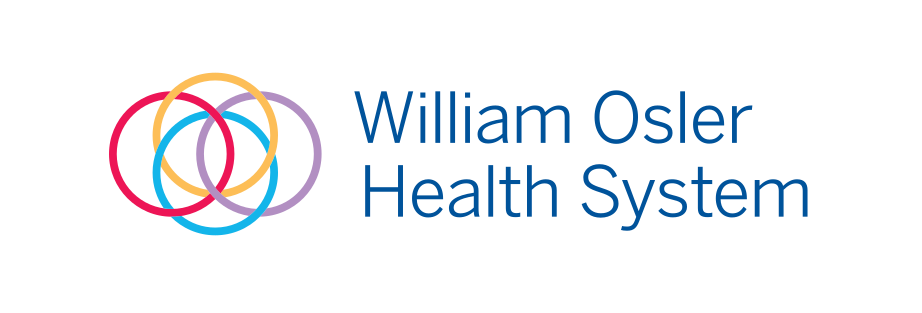

PATIENT & VISITOR SUPPORT

SEP 2026 — PRESENT · PEEL MEMORIAL CENTRE
Care begins
at the front door.
Main Lobby & Wayfinding Volunteer
Volunteering at William Osler was a childhood dream. At Peel Memorial Centre, I welcome patients and visitors, help them navigate to services, respond to wheelchair requests, and offer a calm presence during unfamiliar or stressful visits.
On my first shift, I reassured an anxious visitor in our shared mother tongue and guided them to Urgent Care. I also learned from experienced volunteers and stayed beyond my shift to help another new volunteer feel prepared.
- Patient and visitor wayfinding
- Wheelchair assistance and practical support
- Clear communication, empathy, and teamwork